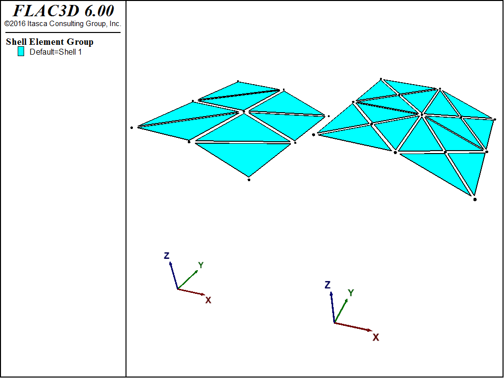
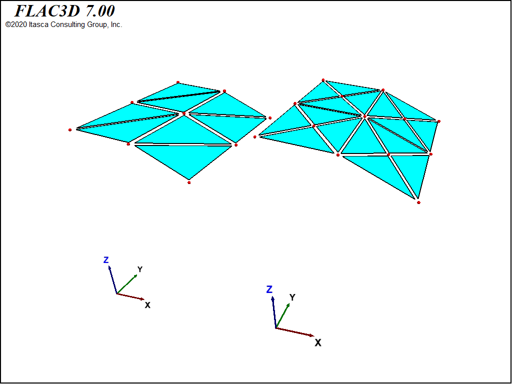
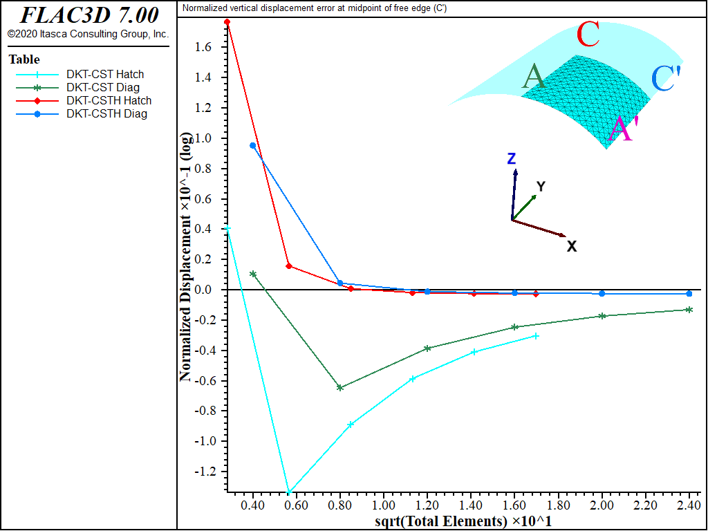
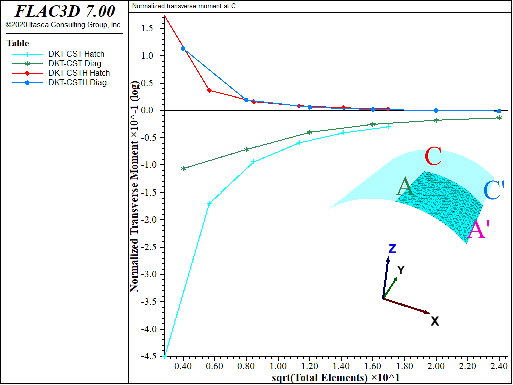
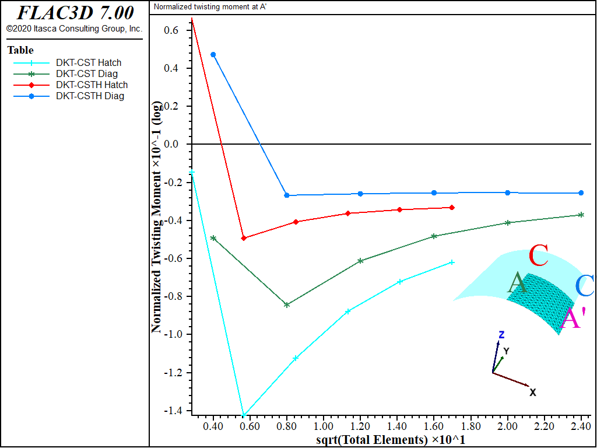
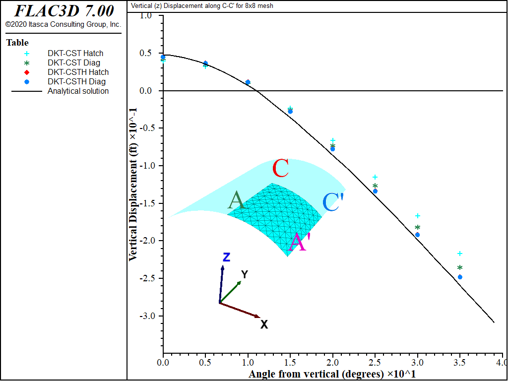
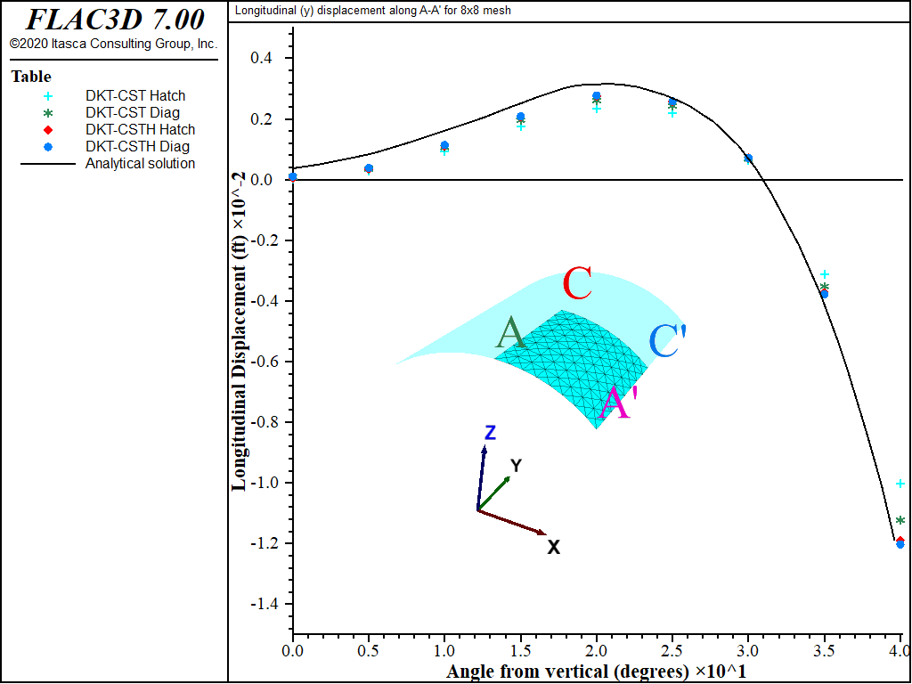
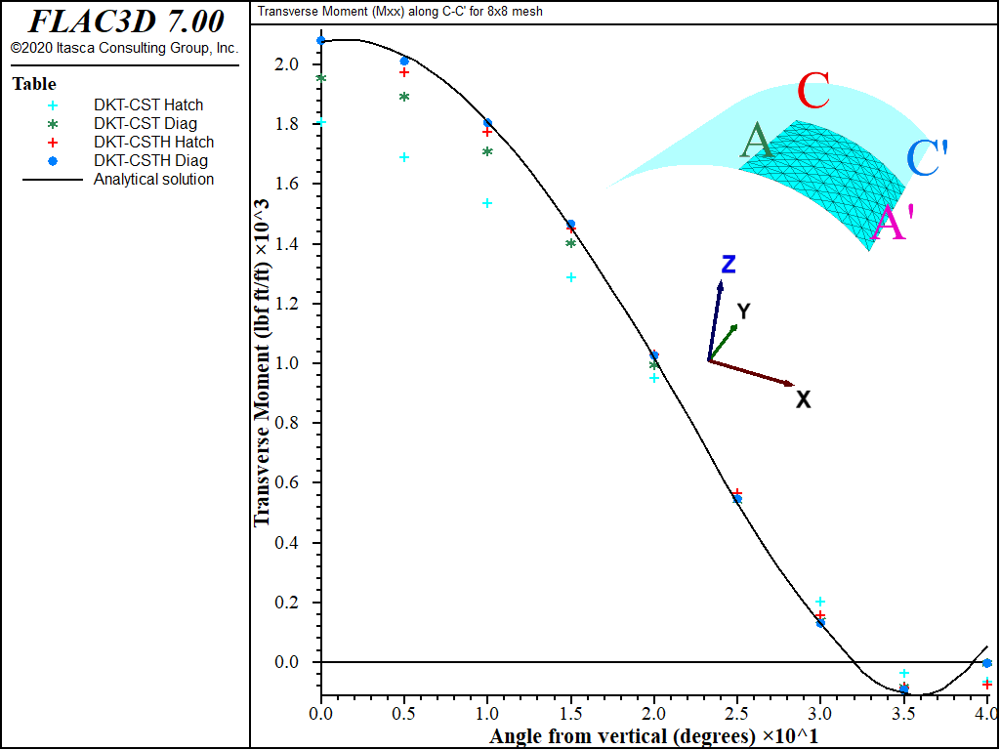
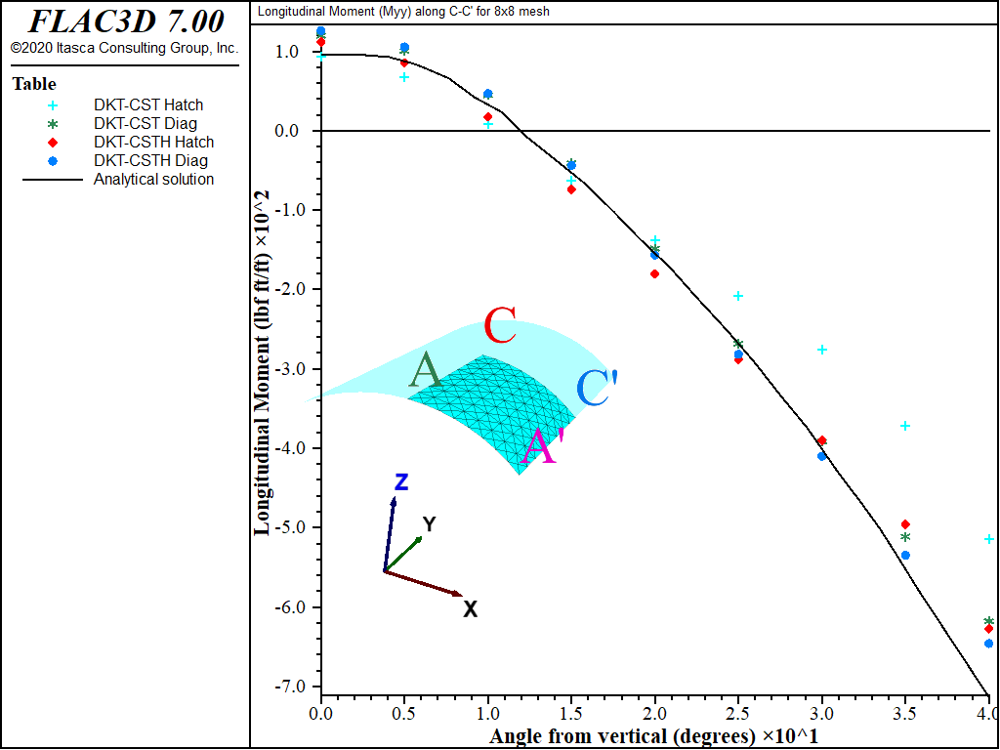
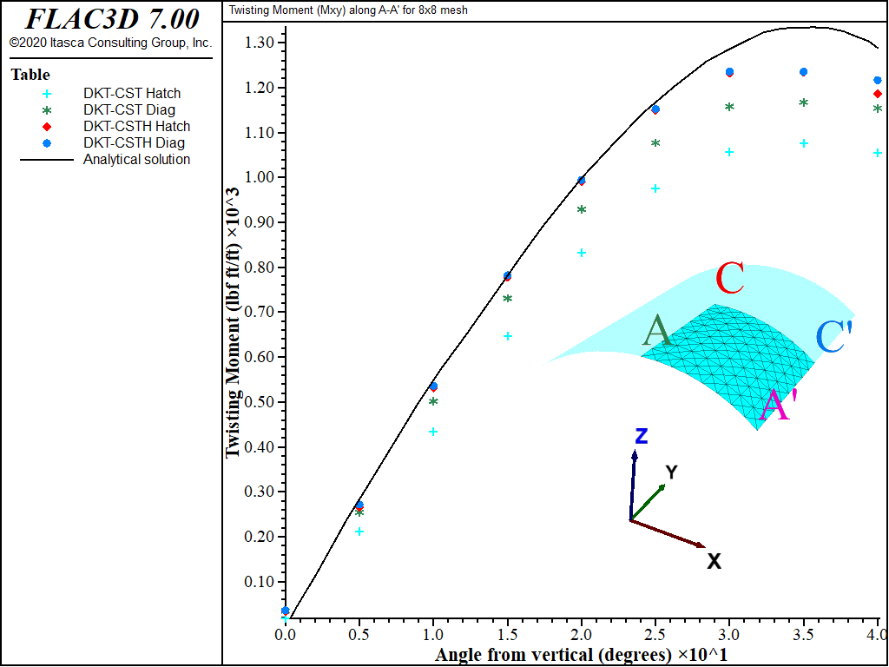

圆柱形混凝土拱顶
问题描述
注意
要在 FLAC3D 中查看该项目，请使用菜单命令 。选择 “VerificationProblems/ CylindricalConcreteVault” 并选中 “CylindricalConcreteVault.f3prj” 载入。所用 主数据文件（main data files） 示于本例末尾。其余数据文件可在该项目中找到。
用 FLAC3D 中可用的两种不同壳单元分析由两个刚性隔板支承、承受自重的圆柱形混凝土拱顶。通过加密网格进行收敛研究，考察单元类型与网格模式对结构响应（变形与壳应力合力）的影响。结果量化了壳单元的精度，并说明网格模式与网格密度对精度的影响。本问题中壳单元与周围连续体之间没有耦合，这与隧洞分析的情形不同。尽管如此，可以认为本问题与该类体系相似，此处所述结果可帮助在耦合问题中选择适当的离散化与单元类型。
该问题已成为单曲率壳事实上的标准考题（MacNeil 与 Harder 1985），并被 Zienkiewicz 与 Taylor（1991，第 123-128 页）以及 Carpenter 等（1986）如此采用，后者称之为 Scordelis-Lo 屋盖（Scordelis 与 Lo 1964）。该结构为圆柱形混凝土拱顶，由两个刚性隔板支承，并承受自重（见 图 1（Figure 1））。由于支座约束端部挠度，弯曲作用强烈，弯曲与膜变形对自由边中点竖向位移都有显著贡献。


图 1：由两个刚性隔板支承的圆柱形混凝土拱顶。
拱顶半径 25 ft、包含角 80°，两隔板墙之间跨度 50 ft。荷载为混凝土壳自重，沿负 \(z\) 方向作用。拱顶由两个刚性隔板墙支承，因此沿这两条边（图 1（Figure 1） 中标为 \(A-A'\) 与 \(B-B'\)），各墙平面内的位移固定，但拱顶可沿 \(y\) 方向移动并绕各边转动。（这些墙相对垂直于其表面的荷载较为柔性，且不抵抗沿其顶边的弯曲。）赋以下几何与材料性质：
| 壳厚度 | \(t\) = 3 in |
| 重力加速度 | \(g\) = 32 ft/s2 |
| 材料密度 | \(\rho\) = 11.25 lbm/ft3 |
| 壳的重量 | \(w_s\) = 90 lbf/ft2 |
| 杨氏模量 | \(E\) = 4.32 × 108 psf |
| 泊松比 | \(\nu\) = 0.0 |
闭式解
Zienkiewicz 与 Taylor（1991，第 123-128 页）以图形给出了拱顶各截面上位移与力矩的解析结果。这些结果依据 Scordelis 与 Lo（1964）以及 Scordelis（1971）的分析算出。本次对比中使用了 Zienkiewicz 与 Taylor（1991）的图形。解析结果包括：
- 沿中心截面 \(C-C'\) 的竖向位移 \(w\)；
- 沿支座截面 \(A-A'\) 的纵向位移 \(v\)；
- 沿中心截面 \(C-C'\) 的横向力矩 \(M_1\) 与纵向力矩 \(M_2\)；以及
- 沿支座截面 \(A-A'\) 的扭矩 \(M_{12}\)。
本次收敛研究采用的自由边中点（图 1（Figure 1） 中点 \(C'\)）竖向位移取 0.3024 ft。MacNeil 与 Harder（1985）指出 Scordelis 与 Lo（1964）给出的是 0.3086 ft，且许多壳有限元表述收敛到略小的值。MacNeil 与 Harder（1985）以及 Carpenter 等（1986）都用 0.3024 ft 归一化其结果。
FLAC3D Model
该问题有两条对称线，因此用 FLAC3D 只分析结构的四分之一（图 1（Figure 1） 中的阴影区域）。通过提高一组 \(N \times N\) 网格的分辨率 \(N\) 进行收敛研究，网格采用交叉 hatch 与交叉对角两种模式（见 图 2（Figure 2））。对交叉对角网格，中点节点位于四周相邻四个节点构成的平面内，而不在真实圆柱面上。这使两种网格模式产生相同的四边形棱面网格。若把中点节点置于真实圆柱面上，则网格中类似金字塔的棱面使 DKT-CST 单元精度的降低甚于 DKT-CST 杂交单元（Carpenter 等 1986）。（若用 structure shell create 命令的 cross-diagonal 关键字生成交叉对角壳网格，则中点节点将置于单元所附着网格单元面四个角点的形心，从而产生所需的四边形棱面网格。）


图 2：2 × 2 网格示例，交叉 hatch 模式（左）与交叉对角模式（右）。
FLAC3D 模型沿四条边的位移边界条件按全局坐标系在 图 1（Figure 1） 中给出如下。只指定完全固定的位移分量；所有其他位移分量自由。
edge \(A-A'\) : \(u = w = 0\)
边 \(A'-B'\)：所有位移分量自由
边 \(C-C'\)：对称面 \(v=0\)、\(\theta_x=\theta_z=0\)
边 \(D-D'\)：对称面 \(u=0\)、\(\theta_y=\theta_z=0\)
各网格先用 geometry 命令生成圆柱壳形状，随后用 结构壳单元导入从几何（structure shell import from-geometry） 命令创建壳单元。模型构建通过指定材料性质（对各壳单元）、边界条件（对各节点）与荷载完成。荷载为沿负 \(z\) 方向作用的重力诱导体力，通过指定相应单元密度与重力向量赋值。体力依据单元体积计算，并平均分配到各单元的三个节点。
数据文件 “CylindricalConcreteVault.dat” 加载 “store_results.dat” 与 “run_all_cases.dat”，然后调用 FISH 函数 运行全部工况（run_all_cases） 求解所考察的全部 24 个算例。六种离散化各用 DKT-CST 与 DKT-CSTH 单元，并采用 hatch 与交叉对角两种单元模式。用 求解模型（model solve） 命令求解到静态平衡，ratio-local 取 1 × 10-6。
力矩按如下定向的表面坐标系恢复：\(x\) 轴等于全局 \(x\) 轴在各单元表面上的投影，\(z\) 轴等于各单元法向向量的方向。按该约定：(a) 沿中心截面 \(C-C'\) 的横向力矩 \(M_1\) 与纵向力矩 \(M_2\) 分别对应 \(M_{xx}\) 与 \(M_{yy}\)；(b) 沿支座截面 \(A-A'\) 的扭矩 \(M_{12}\) 对应 \(M_{xy}\)。
结果与讨论
收敛研究中我们改变单元类型（DKT-CST 与 DKT-CST 杂交）与网格模式（交叉 hatch 与交叉对角），同时加密网格。给出以下量的归一化结果：
- 自由边中点处的竖向位移（解析值：-0.3024 ft——见 图 3（Figure 3））；
- 中心截面 \(C-C'\) 中点处的横向力矩（解析值：2073 ft \(\cdot\) lbf/ft——见 图 4（Figure 4））；以及
- 支座截面 \(A-A'\) 端部（点 \(A'\)）处的扭矩（解析值：1290 ft \(\cdot\) lbf/ft——见 图 5（Figure 5））。
除结构中特定点响应的收敛结果外，图 6（Figure 6） 到 图 10（Figure 10） 还把拱顶各截面上的解析结果与 8 × 8 网格的计算结果进行比较。这些图给出一般性指示：对弯曲作用强烈的问题，用 FLAC3D 中可用的两种单元与两种网格模式可获得何种精度。
结果可用两条结论加以概括与推广。
- DKT-CST 与 DKT-CST 杂交单元都收敛到解析位移与力矩。总体而言 DKT-CST 单元过刚（位移与应力合力被低估），且收敛慢于 DKT-CST 杂交单元。（对 6 × 6 交叉 hatch 网格，DKT-CST 杂交单元已收敛到与解析位移相差 0.2% 以内，而 DKT-CST 单元仍低估该位移 18.5%。见 图 3（Figure 3）。）
- 采用交叉对角网格可软化 DKT-CST 单元，从而改善其性能。DKT-CST 杂交单元基本不受网格模式影响。（这表明使用 DKT-CST 单元时应采用交叉对角网格，而使用 DKT-CST 杂交单元时可采用代价更低（节点与单元更少）的交叉 hatch 网格。不过选择网格模式时还需考虑另一因素：交叉对角网格没有方向偏置，即用交叉 hatch 网格离散的壳结构响应会依 crosshatch 方向而略有不同。）
把这些结果用作选择具体问题适当离散化的指导时请记住：在本验证问题中弯曲作用强烈（特别是有较大的膜应力梯度）。此类问题中 DKT-CST 单元会过刚，DKT-CST 杂交单元性能更好。对没有大膜应力梯度的问题，DKT-CST 单元性能会大为改善，与 DKT-CST 杂交单元更具竞争力。
关于壳单元选择的一般建议如下：对壳单元需连接到 FLAC3D 网格单元的问题，采用 DKT-CST 单元；对其他所有问题，采用 DKT-CST 杂交单元。该建议背后的理由在 结构单元 一节的 壳有限单元（Shell Finite Elements） 中讨论。


图 3：自由边中点 \(C'\) 处归一化竖向位移的对数。


图 4：\(C\) 处归一化横向力矩的对数。


图 5：\(A'\) 处归一化扭矩的对数。


图 6：8 × 8 网格下沿中心截面 \(C-C'\) 的竖向位移。


图 7：8 × 8 网格下沿支座截面 \(A-A'\) 的纵向位移。


图 8：8 × 8 网格下沿中心截面 \(C-C'\) 的横向力矩。


图 9：8 × 8 网格下沿中心截面 \(C-C'\) 的纵向力矩。


图 10：8 × 8 网格下沿支座截面 \(A-A'\) 的扭矩。
参考文献
Carpenter, N., H. Stolarski and T. Belytschko. “Improvements in 3-Noded Triangular Shell Elements,” International Journal for Numerical Methods in Engineering, 23, 1643-1667 (1986).
MacNeil, R. H., and R. L. Harder. “A Proposed Standard Set of Problems to Test Finite Element Accuracy,” Finite Elements in Analysis and Design, 1, 3-20 (1985).
Scordelis, A. C. “Analysis of Cylindrical Shells and Folded Plates,” in Concrete Thin Shells, American Concrete Institute report SP 28-N (1971).
Scordelis, A. C., and K. S. Lo. “Computer Analysis of Cylindrical Shells,” J. Amer. Concr. Inst., 61, 539-561 (1964).
Zienkiewicz, O. C., and R. L. Taylor. The Finite Element Method. Volume 2: Solid and Fluid Mechanics, Dynamics and Non-linearity, Fourth Edition. London: McGraw-Hill Book Company (1991).
数据文件
CylindricalConcreteVault.dat
model new
fish automatic-create off
; 用于创建网格的 FISH 函数
program call 'store_results' suppress ; FISH 将结果存入数组
program call 'run_all_cases' suppress ; FISH 运行全部 24 种工况，包括六种尺寸、
;是否采用混合单元，以及是否采用交叉对角划分
struct shell create by-triangle (0,0,0) (1,0,0) (0,0,1) ; 避免警告
; 第一次删除
geometry edge create by-pos (0,0,0) (1,0,0) ; 避免错误
; 第一次删除
[run_all_cases]
model save 'final'
program return
run_all_cases.dat
model large-strain off
; 运行所研究的全部 24 种工况
; 六种离散程度，混合与普通单元，单向与交叉对角划分
fish define run_all_cases
local etype = map(1,'dkt-cst',2,'dkt-csth')
local crossd = map(1,false,2,true)
local clab = map(1,'h',2,'d')
loop local i (2,12,2)
loop local h (1,2)
loop local cd (1,2)
command
; 删除先前数据
struct shell delete
geometry delete set 'Default'
; 按所需离散程度在圆弧上创建几何数据
geometry edge create by-arc origin (0,0,0) ...
start (0,0,25) ...
end (16.06969,0,19.15111) ...
segments [i]
geometry generate from-edges extrude (0,25,0) segments [i]
; 根据几何对象创建壳单元
struct shell import from-geometry 'Default' ...
element-type [etype(h)] cross-diagonal [crossd(cd)]
; 指定参数和重力
struct shell property isotropic=(4.32e8, 0.0) ...
thick=0.25 density=11.25
model gravity 32
; 指定边界条件。
struct node fix velocity-x velocity-z ...
range position-y 0
struct node fix velocity-y rotation-x rotation-z ...
range position-y 25
struct node fix velocity-x rotation-y rotation-z ...
range position-x 0
; 求解模型
model solve ratio-local 1e-6
; 存储结果
[store_results(i,h,cd)]
; 保存当前状态以供后续参考
model save [etype(h)+string(i)+clab(cd)]
endcommand
endloop
endloop
endloop
end
| 这些内容对您有帮助吗？… 版权与免责声明 | FLAC3D © 2019, Itasca | 原文更新于 2020 年 10 月 8 日 |